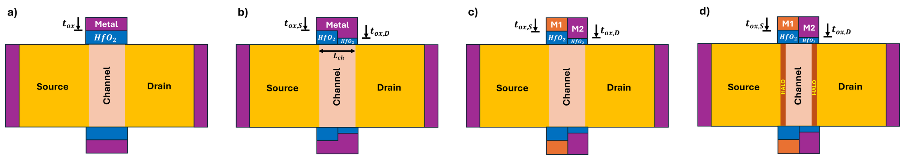
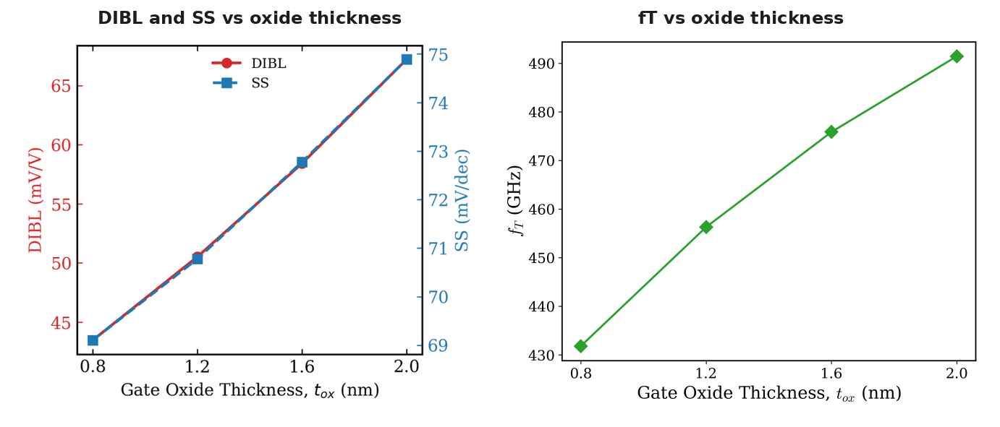
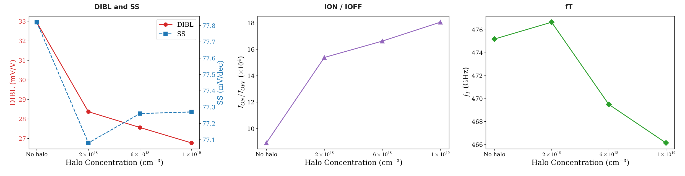

Research project
Mitigation of Short-Channel Effects in 20 nm Double-Gate MOSFETs via Step Oxide, Dual-Material Gate, and Halo Doping
A TCAD study that adds step-oxide, dual-material-gate, and halo-doping engineering to a 20 nm double-gate MOSFET one stage at a time, so the contribution and the cost of each technique can be read off separately.
Feb 2026 – Aug 2026Period
Prof. S. M. Mominuzzaman, BUETSupervisor
Silvaco Atlas TCADTool
ICECE 2026, under reviewStatus
Motivation
- At a 20 nm channel length, drain-induced barrier lowering (DIBL), subthreshold-swing degradation and leakage all get worse. A thinner gate oxide restores gate control, but very thin oxides raise direct-tunneling leakage and reliability risk.
- Step-oxide, dual-material-gate (DMG) and halo techniques are usually reported alone or in pairs. Here they are applied in sequence on the same planar 20 nm DG structure, so the gain from each stage, and what it costs in ION, Vth, SS and fT, is visible.
- Goal: reduce DIBL without relying on a uniformly thin oxide.
How it was done
Stage 1: uniform-oxide baseline (UO-DG)
- Top and bottom gate oxides (HfO2) of equal thickness, swept from 0.8 to 2.0 nm.
- Channel length, body thickness and source/drain doping held fixed. Gate-tunneling probability estimated with a WKB expression to show why a thin oxide alone is not a safe fix.
Stage 2: step oxide (SO-DG)
- Thick source-side oxide and thin drain-side oxide. Two sweeps separate the effects: source oxide fixed at 2.0 nm with drain oxide from 0.8 to 1.6 nm, then drain oxide fixed at 0.8 nm with source oxide from 1.2 to 2.0 nm.
- Selected point: 2.0 nm source / 0.8 nm drain, keeping the thick source oxide to limit tunneling.
Stage 3: dual-material gate (DMSO-DG)
- Higher work function on the source side, lower on the drain side, with a 1:1 segment ratio. The work-function difference ΔΦ is swept from 0.1 to 0.3 eV.
- ΔΦ = 0.3 eV gives the lowest DIBL and IOFF and is carried forward.
Stage 4: junction halo doping (Halo-DMSO-DG)
- A 4 nm uniform P+ halo at each source/drain junction, through the full body thickness. Peak concentration swept from 2×1018 to 1×1019 cm−3; channel P− at 8×1014 cm−3, source/drain N+ at 5×1020 cm−3.
- Higher halo doping narrows the drain depletion region (roughly ∝ N−1/2), which limits drain influence on the source-side barrier.
Simulation setup and metrics
- Silvaco Atlas with drift-diffusion transport, Van Dort quantum correction and a self-consistent Gummel–Newton solver. Same mesh and models for every variant. VDD = 0.8 V.
- Vth by the constant-current method; DIBL from Vth at VDS = 0.08 V and 0.8 V; SS over one decade below threshold; fT = gm/[2π(Cgs+Cgd)] from a 1 MHz small-signal AC sweep at VGS = VDS = VDD.
- IOFF is subthreshold channel leakage at VGS = 0. The drift-diffusion model has no tunneling component, so it does not include gate-dielectric tunneling.
Figures




T" loading="lazy">



Results
- DIBL cut by 60% versus the 2.0 nm uniform-oxide baseline: 67.21 → 55.10 → 32.95 → 26.77 mV/V across the step-oxide, DMG and halo stages.
- ION/IOFF improved nearly sixfold, from 3.05×104 to 18.05×104, with IOFF falling from 134.4 to 14.94 nA/µm.
- The gains cost something. ION falls from 4.10 to 2.70 mA/µm, SS ends at 77.27 mV/dec (best was 71.22 at the step-oxide stage), Vth rises to 0.490 V and fT drops from 491 to 466 GHz at the highest halo level.
- Best halo trade-off at 2×1018 cm−3: DIBL 28.37 mV/V, IOFF 20.19 nA/µm, Vth unchanged and fT slightly higher. Beyond that the returns shrink while penalties grow.
| Stage | ION/IOFF (×104) | Vth (V) | SS (mV/dec) | DIBL (mV/V) | fT (GHz) |
|---|---|---|---|---|---|
| UO-DG, 2.0 nm uniform (baseline) | 3.05 | 0.344 | 74.89 | 67.21 | 491.43 |
| UO-DG, 0.8 nm (tunneling-unsafe, reference) | 19.23 | 0.364 | 69.10 | 43.48 | 431.81 |
| SO-DG, 2.0 nm source / 0.8 nm drain | 8.19 | 0.358 | 71.22 | 55.10 | 478.09 |
| DMSO-DG, ΔΦ = 0.3 eV | 8.91 | 0.463 | 77.82 | 32.95 | 475.19 |
| Halo-DMSO-DG, 2×1018 cm−3 | 15.38 | 0.463 | 77.08 | 28.37 | 476.66 |
| Halo-DMSO-DG, 1×1019 cm−3 | 18.05 | 0.490 | 77.27 | 26.77 | 466.13 |
Tools
Silvaco AtlasDeckBuildTonyPlotPython